| 所見 | RA | 変形性関節症（OA） |
| 関節腫脹 | ○ 滑膜炎による | ○（遅れて） |
| CRP高値 | ○ | 正常〜軽度 |
| 抗CCP抗体 | ○（高特異度） | 陰性 |
| RF | ○（70%） | 陰性（まれに軽度陽性） |
| 骨棘形成 | × ←正解 | ○ 変形性関節症に特徴的 |
| 骨びらん | ○ X線でびらん | × |
| 所見 | 詳細 |
| ① 弛張熱（高熱） | 39〜40℃の発熱、夕方〜夜に出現し朝に解熱するパターン |
| ② サーモンピンク色皮疹 | 発熱時に体幹・四肢に出現→解熱とともに消退 |
| ③ 関節炎 | 多発関節炎（手首・膝・股関節等） |
| ④ リンパ節腫大 | 頸部・腋窩等のリンパ節腫大 |
| ⑤ 肝脾腫 | 肝・脾の腫大 |
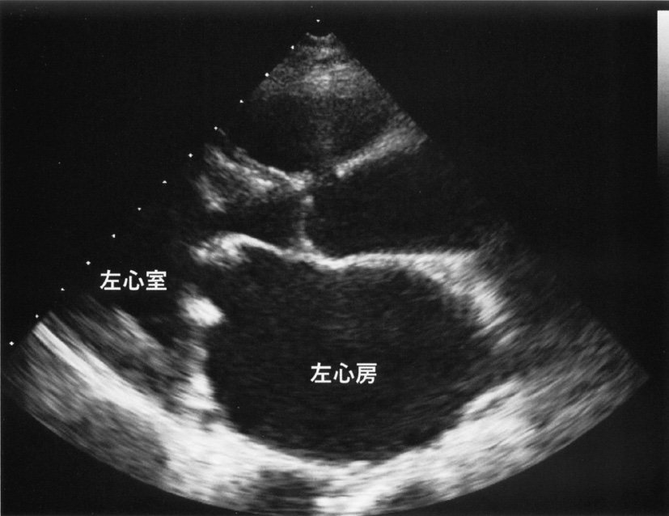
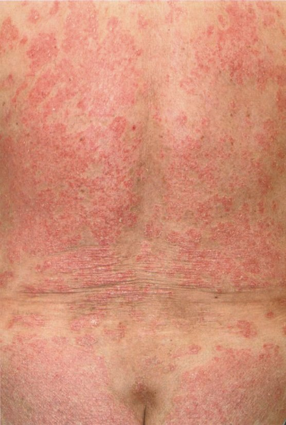
| 臓器 | 病変 |
| 眼 | 上強膜炎・強膜炎（疼痛性）、虹彩毛様体炎、角膜炎 |
| 皮膚 | 皮下結節（リウマトイド結節）、皮膚潰瘍、皮膚壊死（悪性RA） |
| 肺 | 間質性肺炎（線維化）、胸膜炎、リウマトイド肺結節 |
| 心臓 | 心外膜炎、心嚢液貯留 |
| 血管 | 血管炎（悪性RA）→末梢神経障害、皮膚潰瘍 |
| 神経 | 頸椎環軸椎亜脱臼→脊髄症、末梢神経障害 |
| 腎臓 | アミロイドーシス（続発性AA型） |
| 検査 | 成人Still病での所見 |
| フェリチン | 著明高値（1000 ng/mL以上が目安）、活動性と相関 |
| 白血球 | 増多（好中球主体） |
| CRP・ESR | 著明上昇 |
| ANA・RF | 陰性（血清陰性関節炎） |
| トランスアミナーゼ | 上昇することあり |
| 炎症性腰痛（強直性脊椎炎等） | 機械的腰痛（変形性など） | |
| 安静時 | 悪化（特に夜間〜早朝） | 改善 |
| 運動時 | 改善 | 悪化 |
| 朝のこわばり | 30分以上持続 | 短い |
| 検査 | 感度 | 特異度 | 特徴 |
| CRP | 高い | 低い（非特異的） | 炎症の一般マーカー |
| 抗核抗体（ANA） | 中程度 | 低い | SLE等にも陽性 |
| 血清IgG | — | 低い | 非特異的 |
| リウマトイド因子（RF） | 70〜80% | 80〜90% | OAやSjögrenにも陽性 |
| 抗CCP抗体 | 70〜80% | 特異度 >98% | 早期RA・予後予測に有用 |
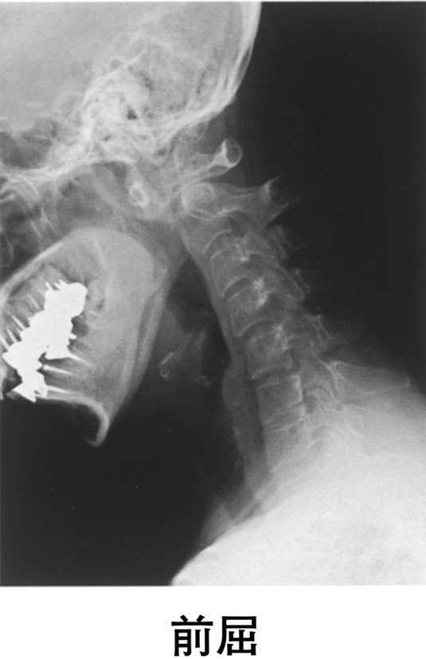
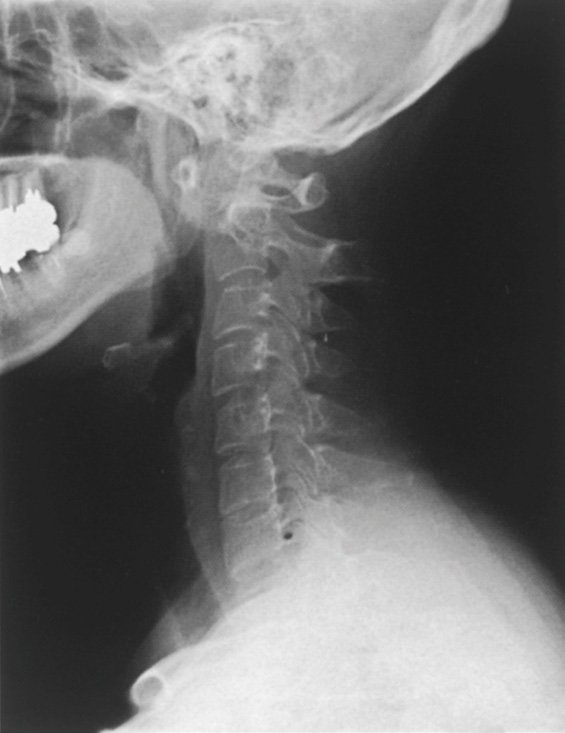
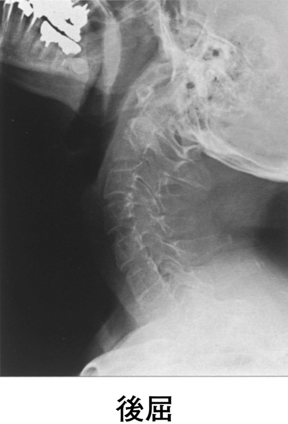
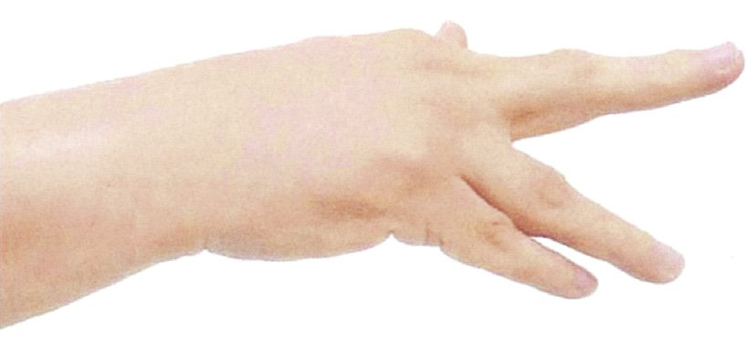
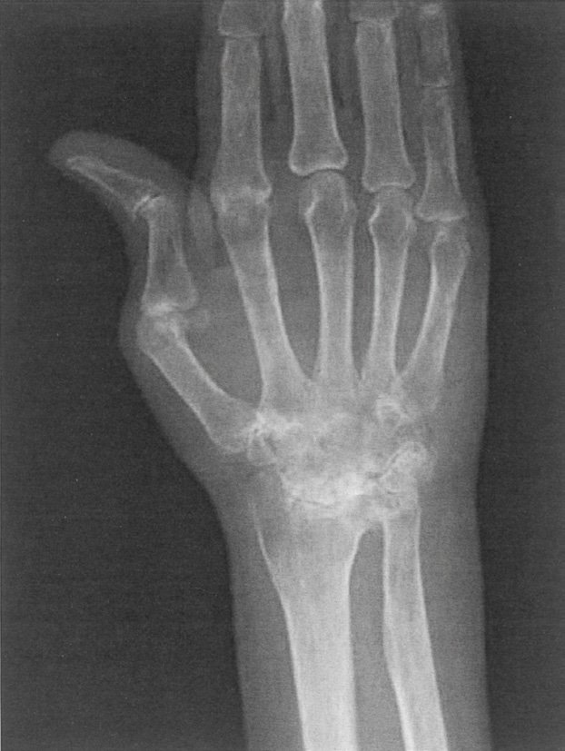
| 所見 | 腱断裂 | 神経麻痺 |
| 自動伸展 | × 不可 | × 不可 |
| 他動伸展 | ○ 可能 | ○ 可能 |
| 筋力 | 正常（筋に問題なし） | 低下 |
| 感覚障害 | なし | あることが多い |
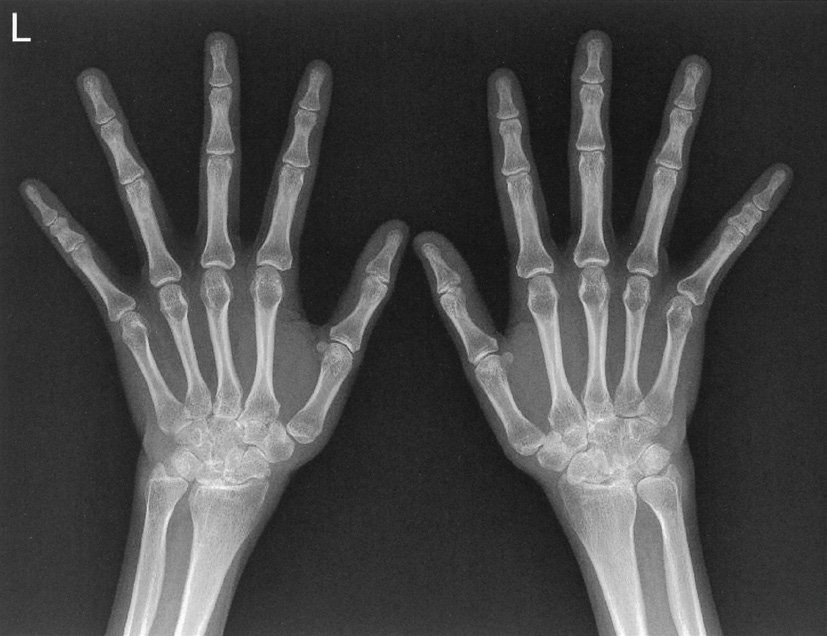
| 薬剤 | 評価 |
| ａ 金製剤筋注 | 現在はほぼ使用されない（副作用・効果不確実） |
| ｂ 抗菌薬 | 感染性関節炎の治療（RAには使わない） |
| ｃ コルヒチン | 痛風・FMFの治療（RAには使わない） |
| ｄ MTX経口投与 | RA第一選択csDMARD→正解 |
| ｅ シクロホスファミド | SLE・AAVなど重篤な自己免疫疾患用（RAには通常使わない） |
| 眼合併症 | 特徴 |
| 強膜炎 | 強い疼痛・充血。悪性RAで壊死性強膜炎→失明リスク |
| 上強膜炎 | 強膜炎より軽症・充血・圧痛。セルフリミティング |
| 虹彩毛様体炎 | 充血・眩しさ・前房炎症。JIA（若年性RA）に特に多い |
| 乾性角結膜炎 | Sjögren症候群合併時（二次性Sjögren） |
| RA関節外症状（○） | RA以外の疾患（×） |
| 皮下結節（リウマトイド結節） | 後腹膜線維症 → IgG4関連疾患・薬剤性 |
| 皮膚潰瘍（血管炎） | |
| 心外膜炎・心嚢炎 | |
| 間質性肺炎・胸膜炎 | |
| 上強膜炎・強膜炎 | |
| 続発性アミロイドーシス（AA型） |
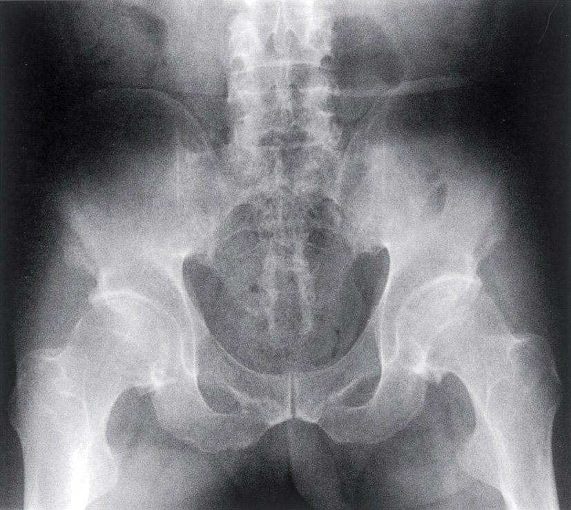
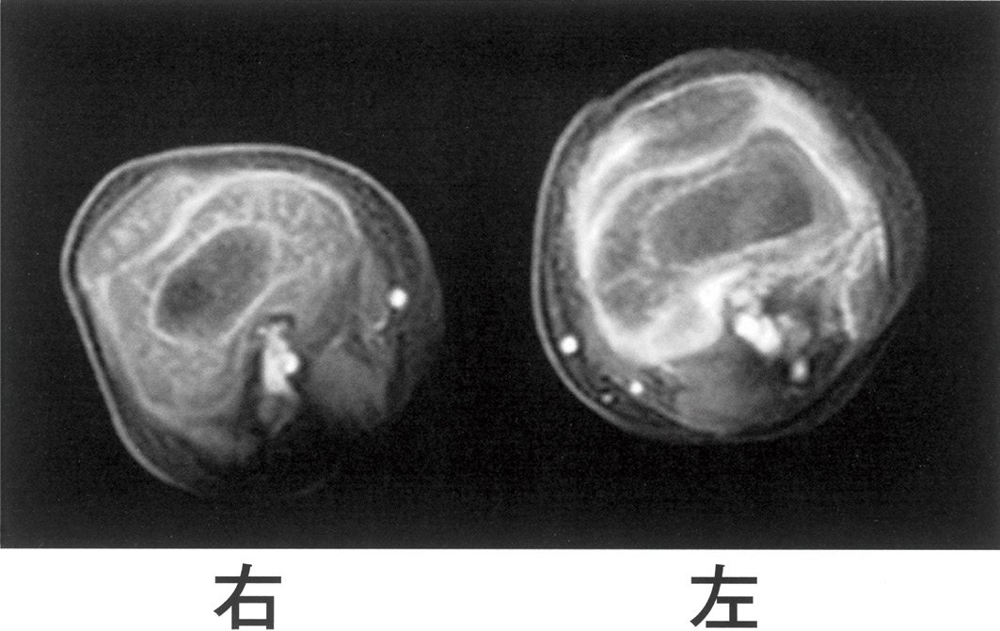
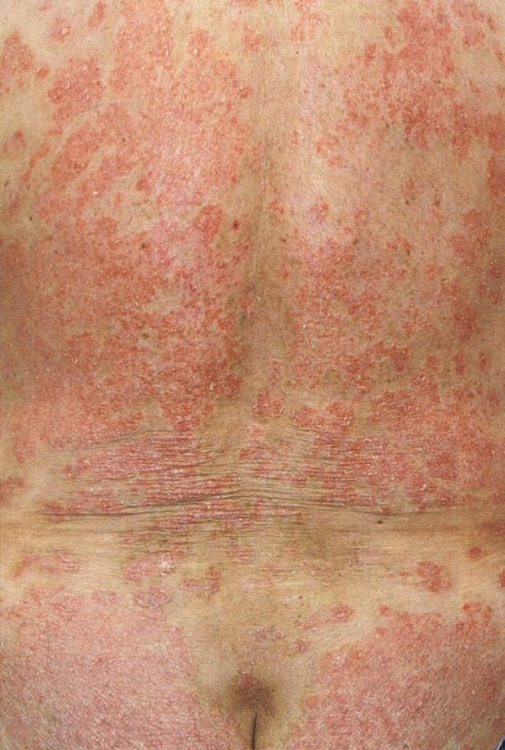
| 検査 | X線 | MRI | 超音波（US） | 関節鏡 |
| 骨びらん早期検出 | ×（遅れる） | ○ | △ | ○ |
| 滑膜炎の評価 | × | ○（造影MRI） | ○（パワードプラ） | ○ |
| コスト・侵襲 | 安価・非侵襲 | 高価・非侵襲 | 安価・非侵襲 | 侵襲 |
| 早期RA診断 | △（骨びらんが遅れる） | ○ 有用 | ○ 有用 | 侵襲性高い |
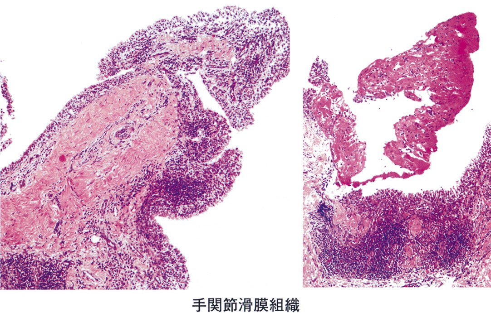
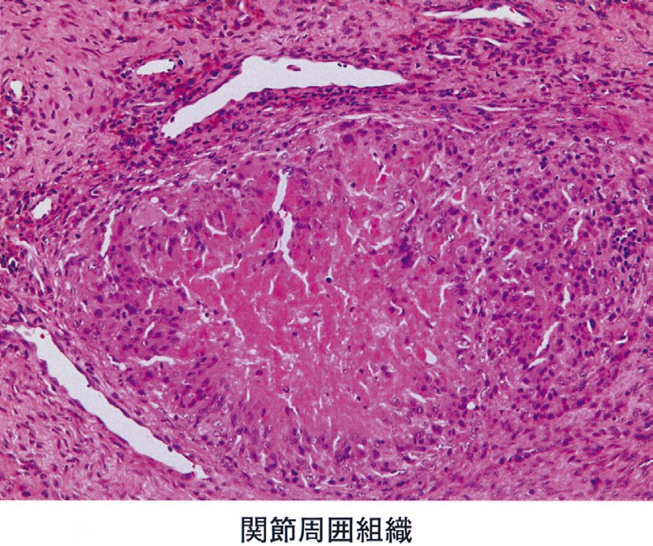
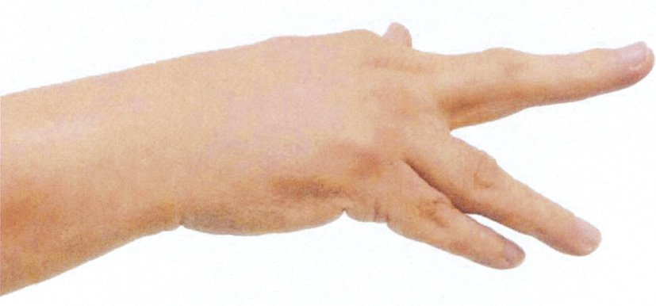
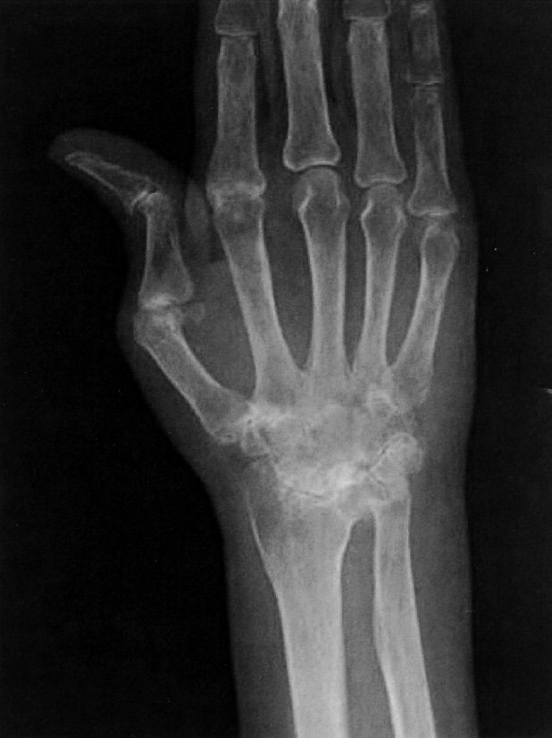
| 所見 | 腱断裂 | 橈骨神経麻痺 | 頸椎性脊髄症 |
| 自動伸展 | × 不可 | × 不可 | × 低下 |
| 他動伸展 | ○ 可能 | ○ 可能 | ○ 可能 |
| 感覚障害 | なし | あり（第1背側指間等） | あり |
| 筋萎縮 | なし | あり（しばらくして） | あり |